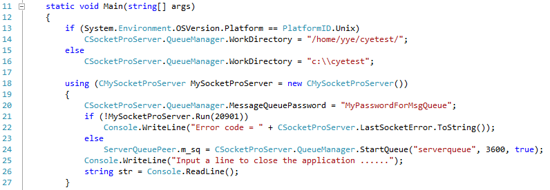
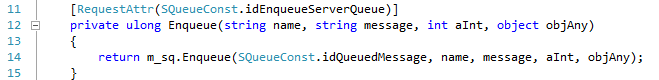
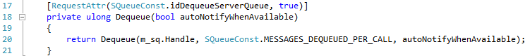
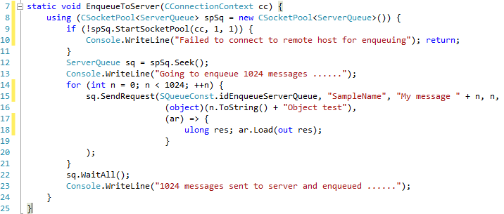
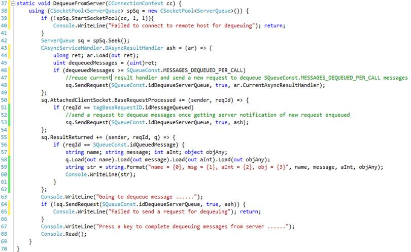

Tutoral 5 -- SocketPro Server Queue
Contents:
Introduction
Server side code
· Start a sharable persistent queue at server side
· Enqueue requests
· Dequeue requests
Client side code
· Send a number of requests
· Dequeue messages in batch
1. Introduction
Requests can be persistently en-queued into a disk data file. If an application is crashed or its network is down, requests can be restored from the disk file after the application is restored and the network is online. As you can see, persistent message queue ensures the reliability of the whole application system. In regards to server persistent message queue, it can be used as asynchronous communication among offline clients through a server or broker. A client sends a message to the server and queues it into a persistent message queue then another client can de-queue the message at its own pace.
SocketPro fully supports persistent message queues at client or/and server. In regards to client persistent message queue, you can review it with tutorial one. This tutorial is focused on server persistent message queue only.
The tutorial projects are located at the directory ..\tutorials\(csharp|vbnet\cplusplus|java\src|ce|python)\server_queue
2. Server side code
Start a sharable persistent queue at server side: It is simple to start a persistent message queue at server side as shown in the following Figure 1. The code snippet starts a sharable queue in line 24 after successfully starting a listening socket in line 21.

Figure 1: Start a sharable persistent queue at server side
It should be emphasized that all SocketPro persistent message queues are thread-safe. Moreover, SocketPro persistent message queues at server side are usually sharable by default. Therefore, you can en-queue or/and de-queue messages from different clients securely in unison from different threads.
Enqueue requests: You can use generic (or template in C++) method Enqueue to en-queue an arbitrary request as shown in the following Figure 2. Note that the function returns a unique index for queued message.

Figure 2: En-queue an arbitrary request into a server persistent request queue
Dequeue messages in batch: One client is able to de-queue a batch of queued requests utilizing the method Dequeue at server side as shown in the following Figure 3. You can set its last input argument to true to ask for an auto message availability notification. When an online client is informed immediately after a message is queued, the client can initialize a new request to de-queue it straightway without use of polling.

Figure 3: Dequeue requests in batch from a server persistent queue with auto availability notification
3. Client side code
Send a number of requests: As shown in the following Figure 4, we send 1024 requests onto a remote SocketPro server for en-queuing. You can get queued message indexes inside the callback in lines 17 through 19. If you like, you can cancel these messages from recorded indexes.

Figure 4: Send 1024 requests onto remote server for en-queuing
Dequeue messages in batch: It is also simple to de-queue messages from server queue in batch as shown in Figure 5 below.

Figure 5: Dequeue requests at client side from server persistent queue with message queued notification from server
Code in lines 43 through 49 is actually a callback. We first load the returning result in line 44; afterwards we get the actual number of messages de-queued or returned. If the number of de-queued messages is greater than 32 (SQueueConst.MESSAGES_DEQUEUED_PER_CALL) in line 46, we reuse current callback and keep on sending a new request to de-queue messages.
In case a server message-available notification arrives at a client, we can immediately send a request for new messages instead of keeping a polling message. To do so, we use the code in lines 50 through 54 by monitoring base request idMessageQueued.
Finally, we use the code in lines 55 through 62 to track all messages de-queued from server side for the request id equal to idQueuedMessage.
Ultimately, we need a line code to initialize a de-queue call in line 64. It should be noted that SocketPro does everything in batch whenever possible for promising performance. Request batching, asynchrony and parallel computation makes SocketPro shine in comparison to other available similar products that are not on par. Similarly, our message queue system is runs much faster than ActiveMQ, MS Message Queue, and RabbitMQ.